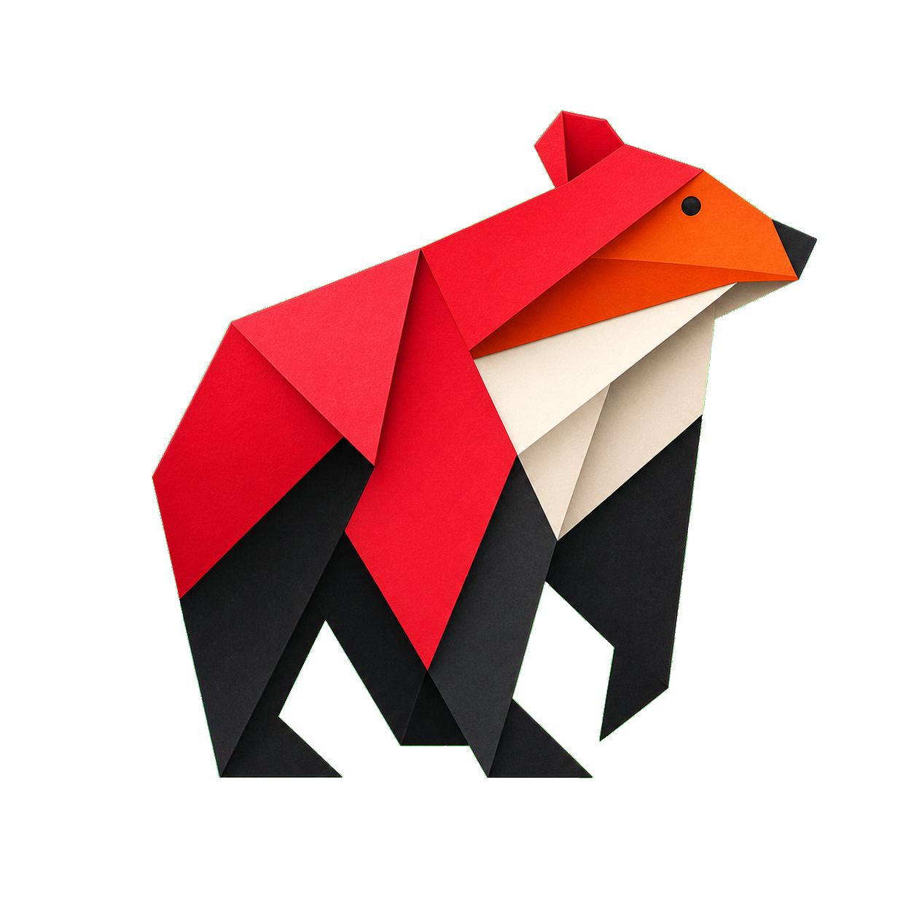
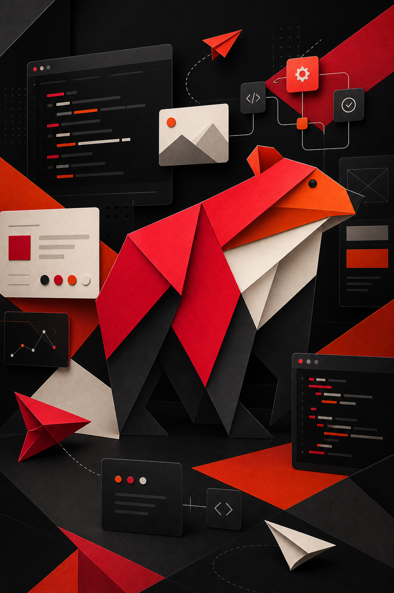

01 / Conversão
Landing pages
Páginas responsivas com narrativa clara, boa hierarquia e foco em conversão.

_StackTrace Fale conoscoEstúdio de tecnologia web
A _StackTrace desenvolve landing pages, interfaces e sistemas web com identidade consistente, arquitetura limpa e foco em resultado.
Serviços
A equipe combina direção visual, arquitetura de interface e implementação front-end para criar experiências digitais consistentes do planejamento ao deploy.

Páginas responsivas com narrativa clara, boa hierarquia e foco em conversão.
Dashboards, painéis e fluxos digitais planejados para operações reais.
Conexão com APIs, formulários, webhooks e automações para reduzir tarefas manuais.
Painéis executivos com leitura rápida, indicadores relevantes e visual consistente.
Presenças digitais completas, responsivas e preparadas para SEO técnico.
Ajustes, melhorias contínuas, performance e suporte para manter o site saudável.
Projetos
Soluções digitais responsivas para diferentes contextos operacionais, com foco em organização da informação, desempenho e uso contínuo.
Painel responsivo para acompanhar indicadores comerciais, consolidar dados de diferentes fontes, gerar relatórios personalizados e apoiar análises com recursos de automação.
Presença institucional para organizações que precisam apresentar serviços, unidades, canais de contato e conteúdos estratégicos com boa performance, SEO técnico e navegação clara.
Plataforma para organizar atendimentos, cadastros, triagens, boletins e relatórios operacionais, com fluxos voltados à padronização e ao acompanhamento das etapas do serviço.
Intranet para centralizar documentos, acessos, comunicados, solicitações e áreas administrativas em uma interface organizada para comunicação e gestão interna.
Processo
Mapeamento de objetivos, público, referências e prioridades da entrega.
Organização de conteúdo, seções, componentes e comportamento responsivo.
Implementação com CSS moderno, JavaScript limpo e atenção aos detalhes.
Revisão visual, ajuste de desempenho e preparação final para publicação.
Contato
Envie uma visão geral do projeto. A _StackTrace retorna com os próximos passos, uma estimativa inicial e o caminho técnico recomendado.